1. 프로젝트 개요
GovBiz는 정부지원사업 탐색부터 신청 준비까지 연결하는 AI 서비스입니다. 여러 기관에 흩어진 공고를 모아, 기업의 조건과 목적에 맞는 사업을 찾고 신청 준비와 진행 상황까지 관리할 수 있도록 돕습니다.
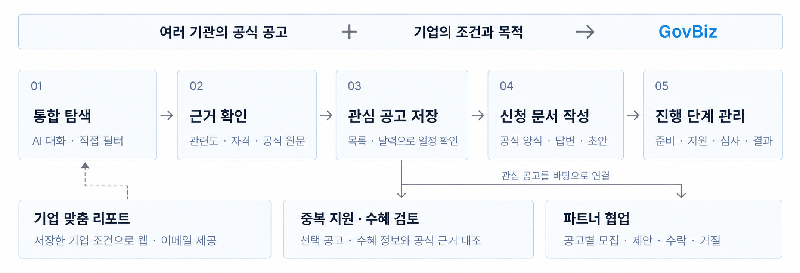
2. 시스템 아키텍처
GovBiz는 화면·업무 처리·AI 실행의 책임을 분리하고, 검색·데이터 저장·배포를 아래 구조로 연결했습니다.
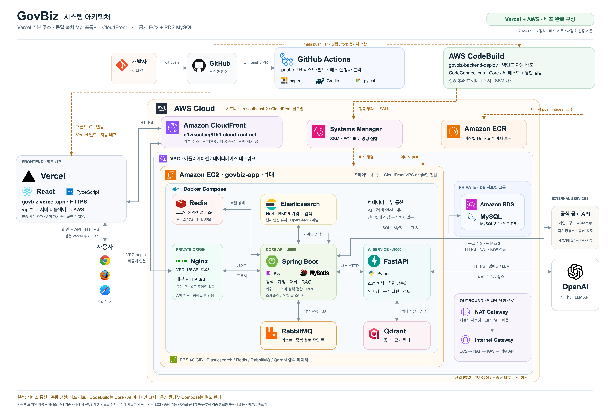
- 서비스: React는 화면, Core API는 업무 처리·검색 결합·응답 검증, AI Service는 의미 검색·LLM 실행을 담당합니다.
- 데이터: MySQL을 원본으로 두고, Elasticsearch·Qdrant는 검색 색인, Redis는 임시 검색 결과 보관, RabbitMQ는 비동기 작업 전달에 사용합니다.
- 운영: 프론트엔드는 Vercel에서 제공하고, EC2·RDS는 프라이빗 네트워크에 배치했습니다. 백엔드는 CodeBuild·ECR·SSM을 통해 배포합니다.
3. 구현 정보
3.1. Elasticsearch(Nori·BM25)와 Qdrant(Vector DB) hybrid 검색 RRF와 LLM Reranking 한 맞춤 공고 검색 구현.
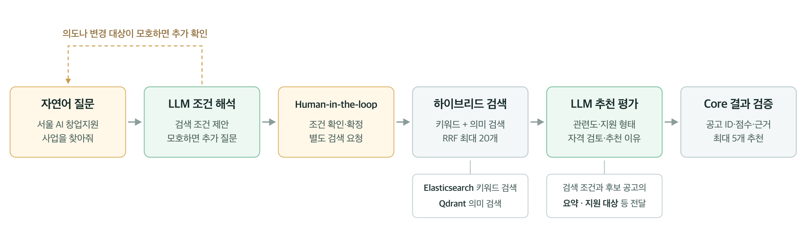
- 자연어 질문과 조건 해석: 예를 들어 “서울 AI 창업지원 사업을 찾아줘”라고 질문하면 LLM이 지역과 지원 목적 등 검색 조건의 변경안을 제안합니다. 검색 의도나 변경 대상이 모호하면 추가 확인을 요청할 수 있습니다.
- Human-in-the-loop(사용자 확인): 사용자가 제안된 조건을 확인하고 검색을 요청합니다. 검색은 조건을 해석하는 요청과 구분해 실행합니다.
- 하이브리드 검색: Elasticsearch는 Nori·동의어·BM25를 활용해 키워드를 검색하고, Qdrant는 벡터로 의미가 비슷한 공고를 찾습니다. Core는 두 검색 결과를 RRF로 결합해 최대 20개 후보를 선정합니다.
- LLM 추천 평가: 검색 조건과 후보 공고의 제목·요약·지원 대상 등 정보를 바탕으로 관련도와 지원 형태를 평가하고, 자격을 검토해 추천 순서와 이유를 구성합니다.
- 결과 검증과 표시: Core가 요청한 공고의 ID인지, 점수 계산과 응답 형식이 맞는지 확인합니다. 자격 검토에 인용한 문구가 해당 공고의 요약 또는 지원 대상에 있는지도 확인한 뒤 최대 5개 공고를 제공합니다.
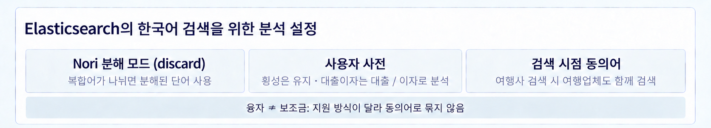
- Nori 분해 모드: 복합어가 나뉘면 분해된 단어를 사용하도록
discard모드를 적용했습니다. - 사용자 사전: 지명과 업무 용어를 원하는 방식으로 분석합니다. 예를 들어 ‘횡성’은 유지하고 ‘대출이자’는 ‘대출·이자’로 나눕니다.
- 검색 시점 동의어: ‘여행사’를 검색하면 ‘여행업체’라는 표현도 함께 고려합니다. 지원 방식이 다른 ‘융자’와 ‘보조금’은 동의어로 묶지 않았습니다.
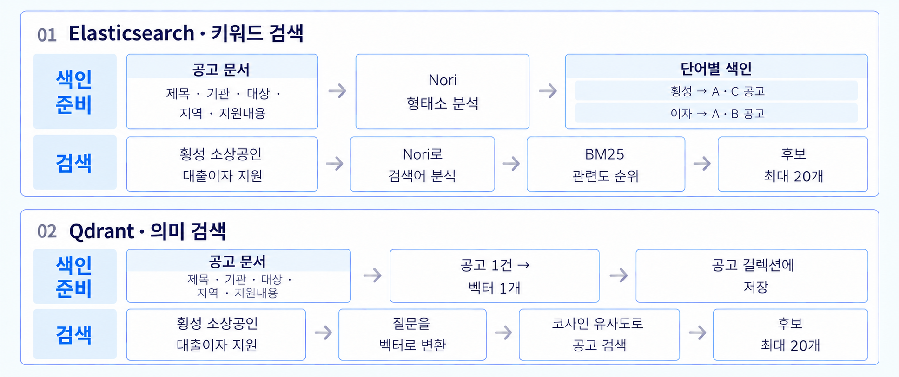
01 Elasticsearch — 키워드 검색
- 색인 준비: Core가 제목·기관·지원 대상·분야·지역·신청 기간·지원 내용 등을 묶은 검색 문서를 전달합니다. Elasticsearch는 이 문서를 Nori로 분석해 단어별 공고 색인을 만듭니다.
- 검색: 질문도 Nori로 분석하고, 단어 색인을 이용해 관련 공고를 찾습니다. BM25가 관련도순으로 정렬해 최대 20개를 반환합니다.
02 Qdrant — 의미 검색
- 색인 준비: 같은 공고 검색 문서 1건을 벡터 1개로 바꿔 Qdrant에 저장합니다.
- 검색: 질문을 벡터로 바꾸고 공고 벡터와 코사인 유사도를 비교해, 의미가 비슷한 공고를 최대 20개 찾습니다.
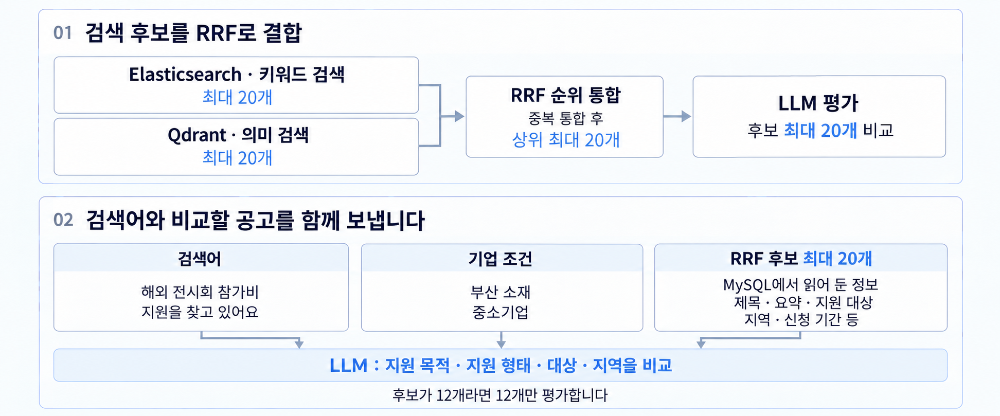
- 후보 수집: Elasticsearch의 키워드 검색과 Qdrant의 의미 검색에서 각각 공고 Top-20 후보를 수집합니다.
- 순위 결합: RRF로 순위를 결합해 최대 20개 공고를 선정합니다.
- LLM 리랭킹: 이후 LLM 평가를 통해 리랭킹(Reranking)합니다.
- 현재 구조의 한계
검색 요청마다 MySQL에서 검색 가능한 공고를 읽고, 대상 공고의 버전 식별 목록을 검색 서비스에 전달합니다. 대상이 1만 건이면 식별 정보도 1만 건이므로, 공고 수와 동시 요청이 늘수록 DB 조회·네트워크 전송·검색 필터 처리 비용이 커질 수 있습니다.
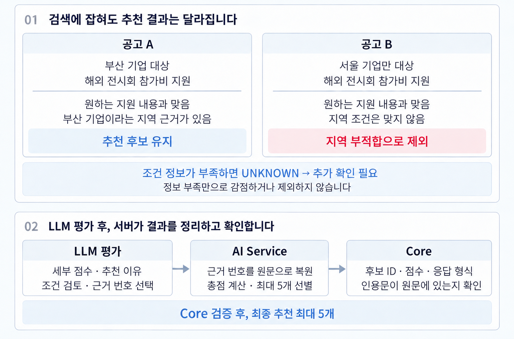
- 신청 조건 검토: 검색 목적과 관련이 있더라도 기업의 대상·지역 조건을 따로 살펴봅니다. 예를 들어 부산 기업에는 부산 대상 공고를 후보로 유지하고, 서울 기업만 대상으로 하는 공고는 제외합니다.
- 정보가 부족한 경우: 조건을 판단할 정보가 없으면
UNKNOWN으로 남겨 추가 확인이 필요함을 표시합니다. 정보가 부족하다는 이유만으로 감점하거나 제외하지 않습니다. - AI 평가 결과 정리: LLM이 공고별 점수·추천 이유·자격 검토와 근거 번호를 반환하면, AI Service가 근거 번호를 공고 문구로 바꾸고 점수를 계산해 후보를 정리합니다.
- Core 검증: Core는 평가 대상 공고 ID, 점수 범위와 계산, 응답 형식 등을 확인합니다. 자격 판단에 인용한 문구가 AI에 전달한 해당 공고의 요약 또는 지원 대상에 실제로 있는지도 확인합니다.
- 최종 추천: 자격 검토를 거쳐 최대 5개 공고와 추천 이유를 제공합니다. 이 검증이 실제 신청 가능 여부나 AI 판단의 의미적 정확성을 확정하는 것은 아닙니다.
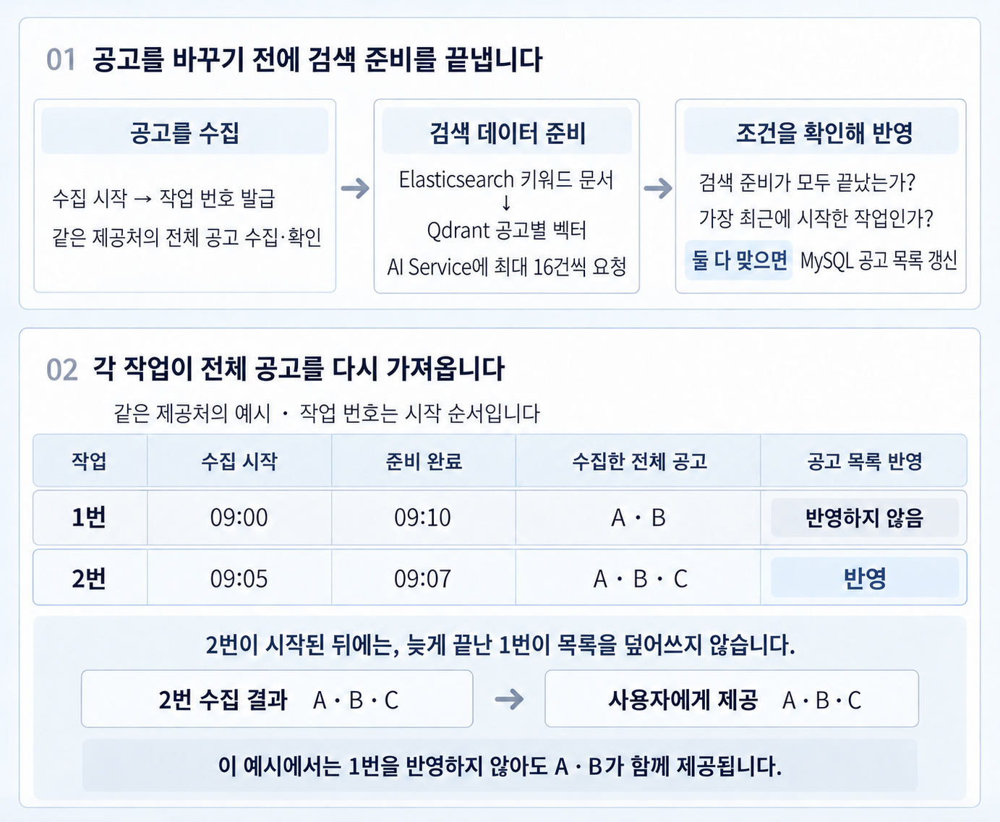
- 두 검색 데이터의 준비와 최신 작업 확인을 마치면 MySQL의 공개 공고 목록을 한 번에 갱신하고, 검색 시에도 현재 목록과 같은 내용의 검색 데이터만 사용합니다.
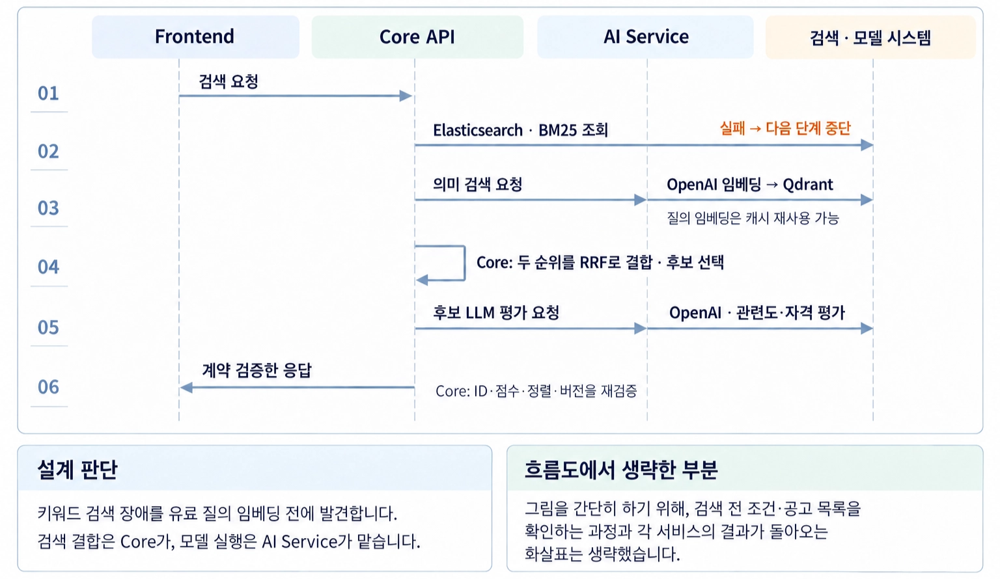
Core는 AI 응답을 검사한 뒤 사용자에게 전달합니다.
- 내용 확인: 요청한 후보의 공고 ID인지, 점수가 정해진 범위와 계산식을 지키는지 확인합니다. 자격 판단의 근거로 인용한 문구가 AI에 전달한 해당 공고의 요약 또는 지원 대상 내용에 실제로 있는지도 확인합니다.
- 오류 구분: 연결 실패·시간 초과·잘못된 응답을 구분해 공통 오류 형식으로 반환합니다. 처리 실패를 정상적인 “검색 결과 없음”으로 바꾸지 않습니다.
- 응답 구성: AI 통신용 데이터와 사용자 API 응답을 분리하고, 검증을 통과한 결과를 사용자 응답으로 구성합니다.
그림에서 생략한 실제 처리 과정
- 결과 반환: Elasticsearch 검색 결과는 Core로, Qdrant 검색 결과와 LLM 평가 결과는 AI Service를 거쳐 Core로 돌아옵니다. Core는 두 검색 결과를 받은 뒤 RRF로 결합하고, 이후 받은 AI 평가 결과를 검사해 사용자에게 전달합니다.
3.2. Qdrant(Vector DB) 기반 원문 청크 검색과 인용 검증을 적용한 공고 상세 질문 RAG 응답 기능 구현.
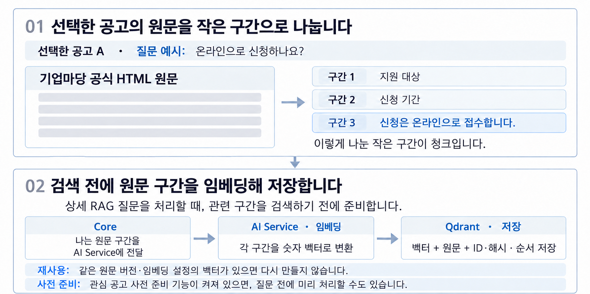
- 원문 준비: Core가 선택한 기업마당 공고의 공식 HTML에서 본문을 가져와 여러 청크로 나눕니다.
- 벡터 색인: AI Service가 각 청크를 임베딩해 Qdrant에 저장합니다. 원문 버전과 임베딩 설정이 같으면 저장된 벡터를 재사용합니다.
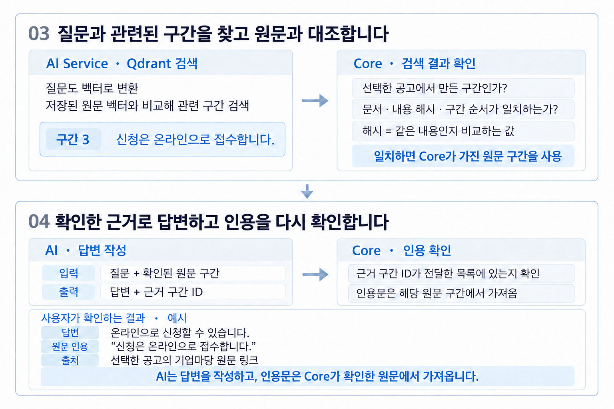
- 근거 검색: Core가 질문과 현재 원문의 청크 목록을 전달하면, AI Service가 Qdrant에서 해당 목록에 속하는 관련 구간을 최대 5개 검색합니다.
- 검색 결과 검증: Core가 검색된 구간의 ID·문서 ID·내용 해시·순서를 확인하고, 검증된 구간의 원문을 AI Service에 전달합니다.
- 답변 생성과 인용: LLM이 질문과 원문 구간을 바탕으로 답변과 인용할 구간 번호를 선택합니다. AI Service의 코드가 번호를 실제 청크 ID로 바꿉니다.
- 인용 검증: Core가 반환된 ID가 답변 생성에 제공한 구간인지 확인하고, 해당 원문과 출처를 함께 제공합니다.
- 예외 처리: 근거가 부족하면
INSUFFICIENT_EVIDENCE로 알리고, 검색 실패나 잘못된 응답·인용은 오류로 처리합니다.
검증 범위: 실제 원문 구간을 인용했는지 확인하지만, 답변의 모든 내용이 의미상 정확하다는 것까지 보장하지는 않습니다.
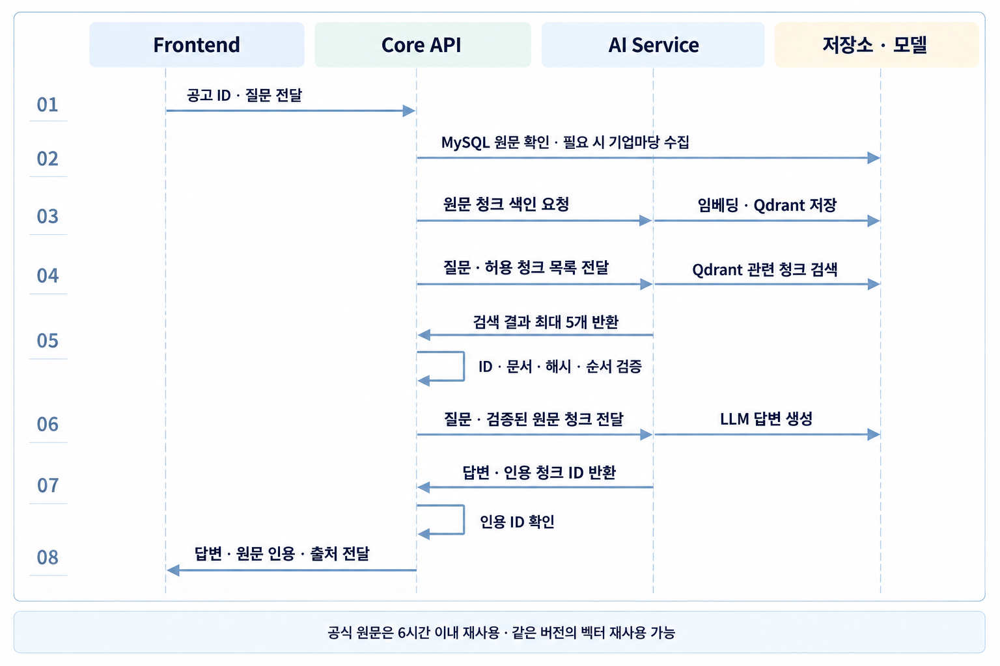
- 원문 준비와 색인: Core가 본문을 청크로 나눠 AI Service에 색인을 요청합니다. 동일한 원문 버전과 임베딩 설정의 벡터는 재사용합니다.
- 근거 검색과 확인: Core는 질문과 현재 공고의 청크 식별 정보를 전달합니다. 검색된 구간을 확인한 뒤 Core가 가진 원문 텍스트를 답변 생성에 사용합니다.
- 답변과 인용: LLM은 답변과 인용할 구간 번호를 선택합니다. AI Service가 번호를 청크 ID로 바꾸고, Core는 답변 생성에 전달한 구간인지 확인해 원문과 출처를 제공합니다.
3.3. LangGraph 기반 ReAct 스타일의 Planning·Tool Calling Loop와 대화 Context·요청 단위 Memory를 활용한 에이전트 구현.
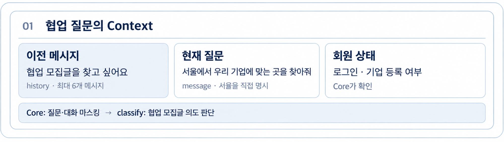
앞서 “협업 모집글을 찾고 싶어요”라고 말한 사용자가 “서울에서 우리 기업에 맞는 곳을 찾아줘”라고 이어 묻는 상황입니다. 앞선 메시지는 ‘곳’이 무엇을 뜻하는지 해석하는 데 도움을 주고, 이번 질문의 ‘서울’은 이후 검색 조건이 될 수 있습니다.
- 프론트엔드: 현재 질문과 직전 사용자·도우미 메시지 최대 6개, 화면 정보와 도움말을 Core에 보냅니다. 화면 복원용 대화는 브라우저 세션 저장소에 보관합니다.
- Core API: 질문과 이전 메시지의 개인정보를 마스킹하고, 서버에서 확인한 로그인·기업 등록 여부를 더해 AI Service에 전달합니다. 기업 상세 프로필은 이 단계에 포함하지 않습니다.
- classify: 질문·대화·회원 상태 등을 LLM에 전달해 의도를 분류합니다. 협업 모집글 검색으로 분류되고 회원 조건을 충족하면
PARTNER_MATCH → plan으로 이어집니다. 실제 분류는 모델 응답에 따라 달라집니다.
모델에 전달하는 Context 예시
다음은 이해를 돕기 위해 일부 필드만 보여 준 예시입니다. 현재 질문에 서울을 직접 명시했습니다.
{
"message": "서울에서 우리 기업에 맞는 곳을 찾아줘",
"history": [
{"role": "USER", "content": "협업 모집글을 찾고 싶어요"}
],
"session": {"authenticated": true, "hasCompany": true},
"context": {"route": "/app/partners", "programSelected": false}
}동적 정보는 시스템 프롬프트가 아닌 사용자 메시지의 JSON으로 전달합니다. 분류 단계에는 도움말도 포함하며, 도구 인증용 계정 번호와 토큰은 LLM 입력에서 제외합니다.
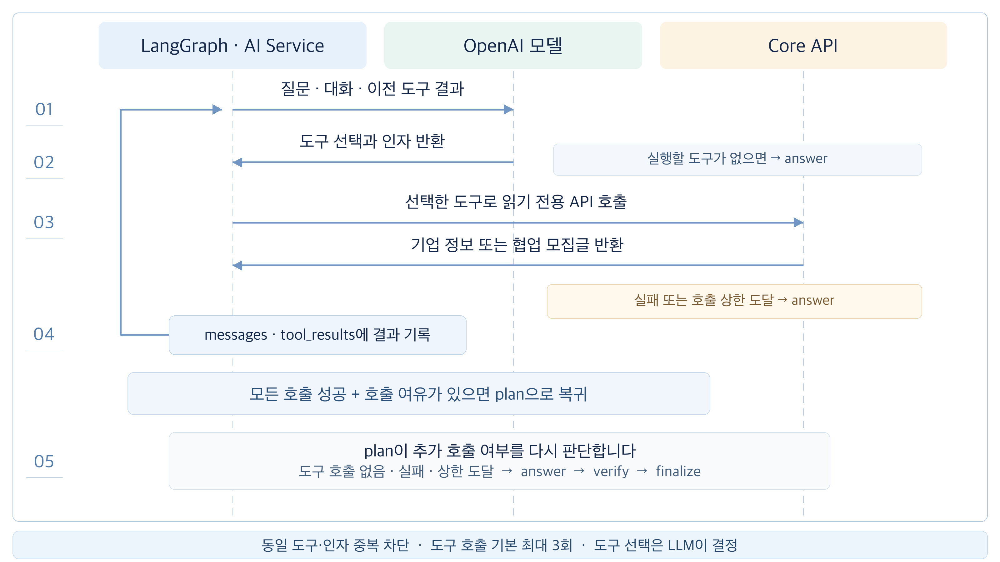
질문과 조회 결과를 바탕으로 도구 선택과 실행을 반복하는 ReAct 스타일의 Tool Calling Loop입니다.
- 질문 전달:
plan이 현재 질문·대화와 앞서 실행한 도구 결과를 LLM에 전달합니다.bind_tools로 사용할 도구와 입력 형식도 함께 제공합니다. - 도구 선택: LLM이 기업 정보 조회나 협업 모집글 검색에 필요한 도구와 인자를 선택합니다. 중복이나 호출 상한을 확인한 뒤 실행할 도구가 없으면
answer로 넘어갑니다. - 데이터 조회:
tools가 선택된 도구를 실행하고 Core의 읽기 전용 API에서 기업 정보나 모집글을 조회합니다. - 결과 기록과 분기: 도구 호출과 결과를 요청 단위 상태에 기록합니다. 지금까지 실행한 도구가 모두 성공했고 호출 횟수에 여유가 있으면
plan으로 돌아갑니다. 실패하거나 상한에 도달하면 추가 호출 없이answer로 이동합니다. - 추가 호출 판단: 다시 실행된
plan이 앞선 결과를 참고해 추가 도구를 호출할지, 답변을 만들지 결정합니다.
도구 호출 예시: get_my_company_profile()로 기업 정보를 확인하고 search_partner_recruitments(region="서울")로 모집글을 찾을 수 있습니다. Core는 마감 임박순 첫 페이지에서 모집 중인 다른 기업의 글을 골라 최대 30건을 반환합니다.
실행 기준: 동일 도구·인자의 반복을 차단하고, 한 요청의 도구 호출을 기본 최대 3회로 제한합니다. 프롬프트는 기업 정보를 먼저 조회하고, 사용자가 이번 발화에 직접 언급한 지역만 검색 조건에 넣도록 지시합니다. 실제 도구 선택과 호출 순서는 모델이 결정하며 여러 도구가 함께 선택되면 병렬로 실행될 수 있습니다.
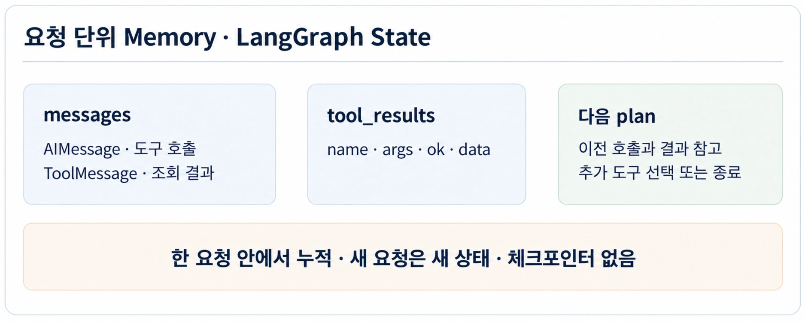
messages: 실행할 도구 호출이 담긴AIMessage와 각 실행 결과를 담은ToolMessage를 누적합니다. 다음plan에서 모델이 이전 결과를 참고합니다.tool_results: 도구 이름·인자·성공 여부·결과 데이터를 기록합니다. 코드는 이 기록으로 중복 호출을 막고, 답변 생성과 카드 검증에 활용합니다.- 범위: 이 상태는 현재 요청을 처리할 때만 사용하고 요청마다 새로 만듭니다. 이전 대화를 담은 Context와 구분되며, 체크포인터를 통한 장기 기억은 사용하지 않습니다.
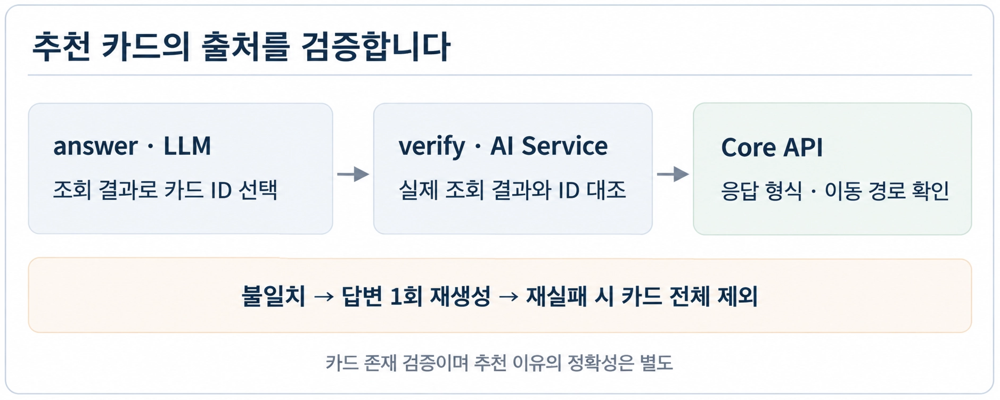
answer → verify → finalize: LLM이 성공한 도구 결과를 바탕으로 답변과 카드 ID를 선택하면, AI Service가 실제 조회 결과와 ID를 대조합니다. 카드 제목과 이동 경로는 조회된 데이터로 구성하고, Core API가 응답 형식과 허용 경로를 다시 확인합니다.
실패 처리: 잘못된 카드가 있으면 답변을 한 번 다시 생성합니다. 재검증에도 실패하면 카드 전체를 제외합니다. 모집글 카드 최대 3개는 프롬프트 지침이며, 응답 스키마의 공통 상한은 5개입니다.
검증 범위: 카드가 실제 조회 결과에 있는지 확인하는 절차이며, 추천 이유의 의미적 정확성이나 실제 협업 적합성까지 보장하지는 않습니다.
구현 근거: 질문 Context 전달 · LangGraph 구성 · 계획·도구 호출 · 상태 관리 · 카드 검증
3.4. Core API와 AI Service의 책임 분리
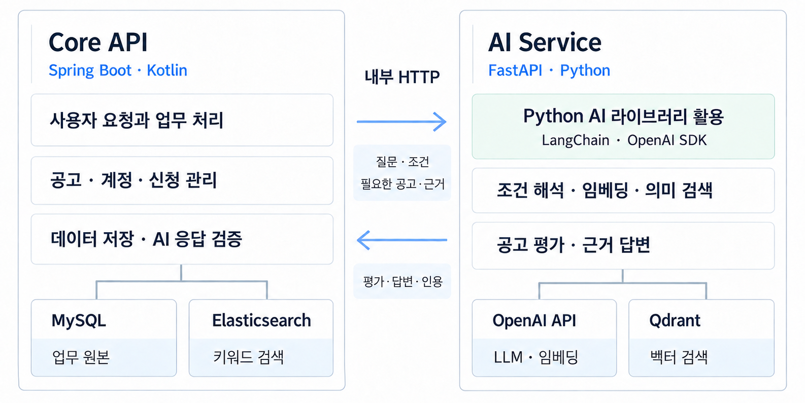
- Python의 LangChain·OpenAI SDK와 임베딩·검색 도구를 활용하기 위해 AI 기능을 FastAPI로 분리했습니다.
- 계정·공고·신청 관리와 데이터 저장은 Spring Boot에 두어, 업무 기능과 AI 처리 로직을 각각 변경하고 관리할 수 있도록 했습니다.
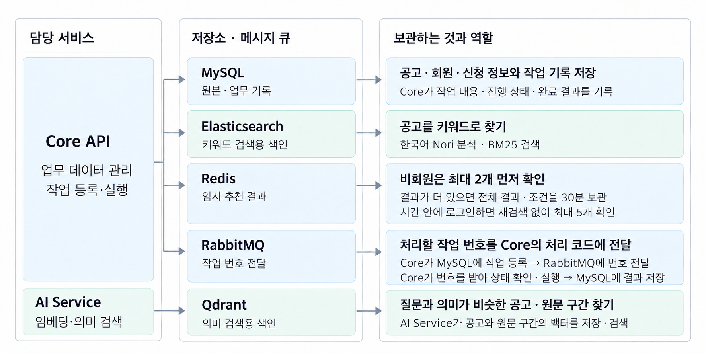
공고 데이터 관리
- 형식 통일: 네 제공처의 공고를 같은 형식으로 정리하고, ‘제공처 코드 + 원본 ID’로 구분합니다.
왜 제공처와 공고 번호를 함께 사용할까요?
공고 번호가 같아도 제공처가 다르면 서로 다른 공고입니다. 제공처 코드는 어디에서 가져왔는지, 원본 ID는 그 제공처가 부여한 공고 번호를 뜻합니다.
예를 들어 기업마당과 K-Startup이 모두 공고 번호
123을 사용한다고 가정해 보겠습니다.- 기업마당의 123번 공고:
BIZINFO:123 - K-Startup의 123번 공고:
KSTARTUP:123
123만 사용하면 두 공고를 같은 것으로 착각할 수 있습니다. 그래서 ‘어느 제공처의 몇 번 공고인가’를 함께 확인해 구분합니다. - 기업마당의 123번 공고:
- 신청 상태: 신청 기간과 오늘 날짜(서울 기준)로 계산합니다.
- 수집 실패: 전체 수집을 완료하지 못하면 기존 공개 데이터를 유지합니다.
- 원문 수집: 상세 RAG용 공식 HTML은 공고 목록과 별도로 수집합니다.
비회원 추천 결과 보관 — Redis
- 먼저 보기: 비회원에게 추천 공고를 최대 2개 보여줍니다.
- 로그인 후 이어 보기: 결과가 더 있으면 전체 추천(최대 5개)과 검색 조건을 30분간 보관합니다. 그 안에 로그인하면 재검색·AI 재평가 없이 전체 결과를 봅니다.
- 보관 기준: 검색 당시 결과를 유지하며, 처음 복원한 로그인 계정만 다시 볼 수 있습니다. 30분이 지나면 임시 결과는 만료됩니다.
3.5. 백엔드 레이어드 구조
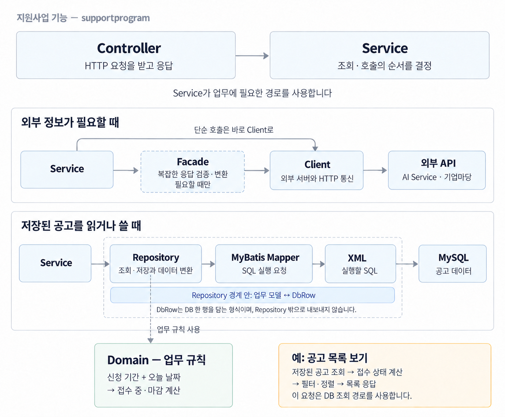
- 요청과 업무: 기능별 디렉터리에서 Controller는 HTTP 요청을 받고, Service는 업무 흐름을 조율합니다.
- 외부 통신: Client가 외부 API를 호출합니다. AI 추천의 공고 ID·점수·근거, RAG 인용 구간처럼 여러 검증이 필요한 응답은 Facade에서 확인하고 내부 결과로 정리합니다. 단순 호출에는 Facade를 추가하지 않습니다.
코드 예시 — Facade는 AI 추천 응답을 어떻게 검증할까?
실제 코드 핵심 발췌 — AI 추천 Facade
AiSupportProgramRankingFacade.kt에서 검증 흐름을 보여주는 부분만 골랐습니다. 아래 코드는 서로 다른 함수의 발췌이며, 요청 구성·반복문·일부 검증은 생략했습니다.1. Client로 AI를 호출하고, 응답 검증이 실패하면 오류로 처리합니다.
val payload = client.rankSupportPrograms(request) return validate(payload, query, candidates, request) ?: throw AiServiceCallException.invalidResponse( "AI Service support program rankings violated the internal contract", null, )validate()안에서 문제가 발견되면null을 반환합니다. 호출부는 이를 정상 결과로 내보내지 않고 오류로 바꿉니다.2. 보낸 공고인지 확인하고, 점수 범위와 합계를 검사합니다.
// validate() 내부: 요청 후보에 없는 공고와 중복 추천을 거부 val programId = ranking.programId ?: return null val candidate = candidatesById[programId] ?: return null if (!seenIds.add(programId)) return null val score = validatedScore(ranking) ?: return null // 점수 검증 함수 private fun validatedScore(ranking: AiScoredSupportProgramPayload): Int? { val semantic = ranking.semanticRelevance?.takeIf { it in 0..40 } ?: return null val supportType = ranking.supportTypeFit?.takeIf { it in 0..10 } ?: return null val total = ranking.totalScore?.takeIf { it in 0..MAX_TOTAL_SCORE } ?: return null return total.takeIf { it == 2 * (semantic + supportType) } }예를 들어 A·B 공고만 보냈는데 C를 추천하면 실패합니다. 의미 점수 30점과 지원 형태 점수 8점이라면 총점은
2 × (30 + 8) = 76이어야 합니다.MAX_TOTAL_SCORE는 100입니다.3. AI가 자격 검토의 근거로 인용한 문장이 실제 전달한 공고 내용에 있는지 확인합니다.
val sourceText = when (field) { AiSupportProgramEligibilityEvidenceField.SUMMARY -> candidate.summary AiSupportProgramEligibilityEvidenceField.TARGET_DESCRIPTION -> candidate.targetDescription } if (!sourceText.contains(quote)) return null예를 들어 AI가 “부산 소재 기업”을 인용했다면, AI에 보낸 해당 공고의 요약 또는 지원 대상 필드에 그 문장이 실제로 포함되어 있어야 합니다.
4. 검증을 통과한 평가를 기존 공고 객체에 붙여 Service에 돌려줍니다.
programs += candidate.program.copy( matchedReasons = reasons, recommendationScore = score, eligibilityReview = review, )공고명·기관 등은 기존 공고 정보를 유지하고, 검증한 추천 이유·점수·자격 검토 결과를 추가합니다.
reasons와review도 앞선 검증을 통과한 값입니다. - DB 접근: Repository가 저장·조회와 업무 모델 ↔
DbRow변환을 통해, DB 데이터를 서비스에서 사용할 공고 객체로 변환합니다. MyBatis Mapper·XML의 SQL 매핑을 Repository 내부에서 처리해서 경계 안에 둡니다. - 업무 규칙: 접수 상태 계산처럼 프레임워크와 무관한 규칙은 Domain에 둡니다.
3.6. 프론트엔드 클린 아키텍처·MVVM·Flux
화면·업무·서버 통신을 분리하고 ViewModel을 통해 화면과 업무 호출을 연결하는 구조를 설계했습니다. 아래는 설계 기준과 대표 적용 흐름이며, 모든 기능에 일관되게 적용하지는 못했습니다.
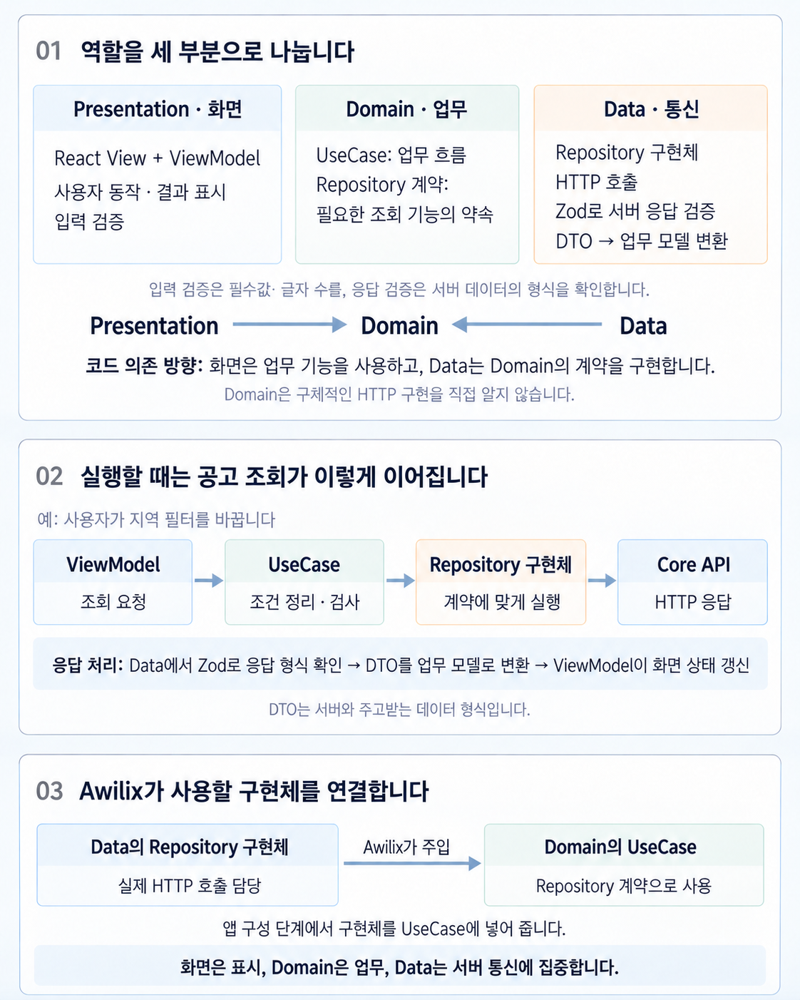
- 화면(Presentation): 사용자 입력을 확인하고 업무 기능을 호출해 결과를 표시합니다.
- 업무(Domain): UseCase가 업무 흐름을 처리하고, Repository 계약으로 데이터를 요청합니다.
- 통신(Data): HTTP로 받은 서버 응답을 Zod로 검증하고, DTO를 업무 모델로 변환합니다.
- 연결(Awilix): 실제 Repository 구현체를 UseCase에 주입합니다.
의존 방향: Presentation → Domain ← Data
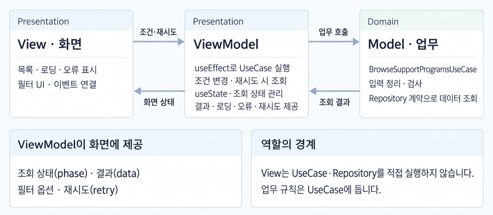
공고 목록 조회: View → ViewModel → UseCase → Repository
- View: 결과·로딩·오류를 표시하고 사용자 동작을 연결합니다.
- ViewModel:
useState로 조회 결과·로딩·오류 상태를 관리하고, 화면에 상태와 재시도 기능을 제공합니다.useEffect는 처음 화면을 열거나 조회 조건이 바뀌거나 재시도할 때 UseCase를 실행합니다. 조건 변경·화면 이탈 시에는 이전 요청을 취소합니다. - UseCase: 업무 규칙을 처리합니다.
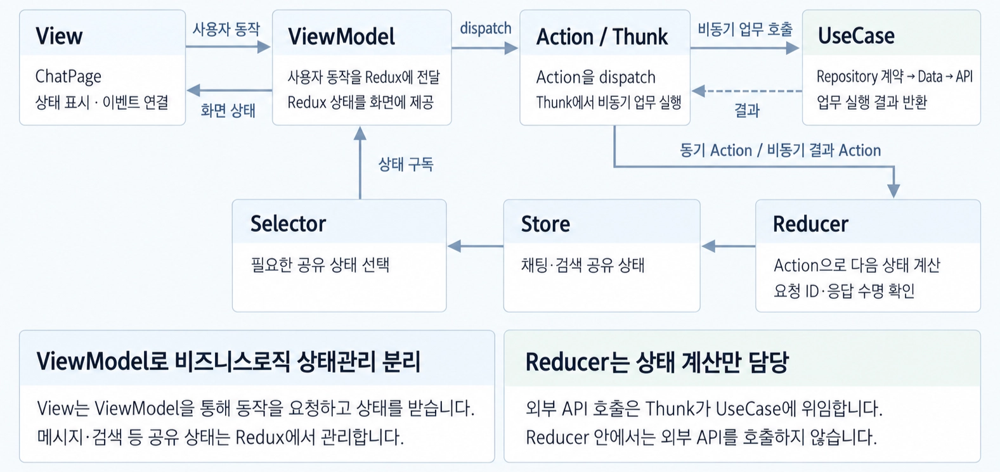
상태 흐름: View → ViewModel → Action/Thunk → Reducer → Store → Selector → ViewModel → View
- ViewModel: 화면의 사용자 동작을 Redux에 전달하고, Redux 상태를 읽어 화면에 제공합니다.
- Thunk: 채팅 검색·조건 해석처럼 공유 상태와 요청을 조율하는 작업에 사용하고, UseCase 실행 결과를 Action으로 전달합니다.
- Reducer: Action으로 다음 상태를 계산하며, API를 직접 호출하지 않습니다.
상태 관리
- Redux: 메시지·검색 등 공유 상태
- 화면 내부: 화면 전용 상태는 React 로컬 상태로 관리하고, DOM 참조는 별도로 유지합니다.
- 응답 보호: 요청 ID·AbortController로 취소되거나 오래된 응답이 최신 결과를 덮어쓰지 않게 처리
두 기능 모두 ViewModel로 화면과 처리 로직을 분리했습니다. 공고 목록은 ViewModel의 로컬 상태로 조회 결과를 관리하고, 채팅은 Redux로 공유 상태를 관리하며 Flux의 단방향 갱신 흐름을 적용했습니다.
한계와 개선 방향 — 설계와 구현의 일관성
- 적용 한계: 신청 문서 결과 화면과 리포트 이메일 확인·수신 해지 화면에서는 View가 UseCase를 직접 호출하고 요청·로딩·오류 처리도 함께 담당합니다. 화면 표시와 처리 흐름을 ViewModel로 분리하는 기준을 모든 기능에 일관되게 적용하지 못했습니다.
- 영향: 화면 변경과 요청 흐름 변경을 같은 컴포넌트에서 다루게 되어, 수정 시 함께 살펴봐야 하는 코드와 테스트 범위가 넓어질 수 있습니다.
- 개선 방향: 화면에 섞인 업무 호출·상태 처리를 역할에 맞게 ViewModel과 UseCase로 나누고, 기능별 코드 리뷰와 의존성 검사로 경계가 유지되는지 확인할 필요가 있습니다.
3.7. Vercel·CodeBuild·ECR·SSM 기반 CD 구축
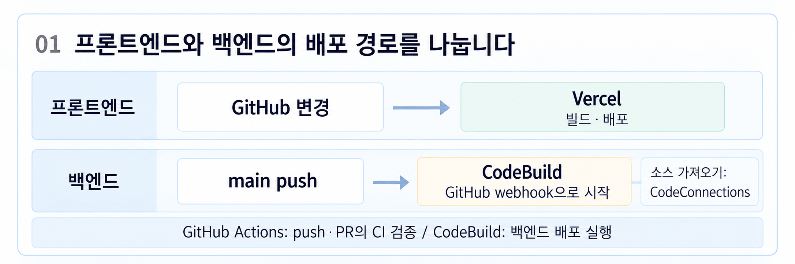
- 프론트엔드: GitHub와 연동한 Vercel에서 빌드·배포합니다.
- 백엔드:
mainpush로 CodeBuild를 시작하고, CodeConnections로 소스를 가져와 검증·이미지 빌드 후 ECR에 게시합니다. SSM으로 EC2에 배포 명령을 전달합니다. - 역할 구분: GitHub Actions는 push·PR의 CI 검증, CodeBuild는 백엔드 배포 실행을 담당합니다.
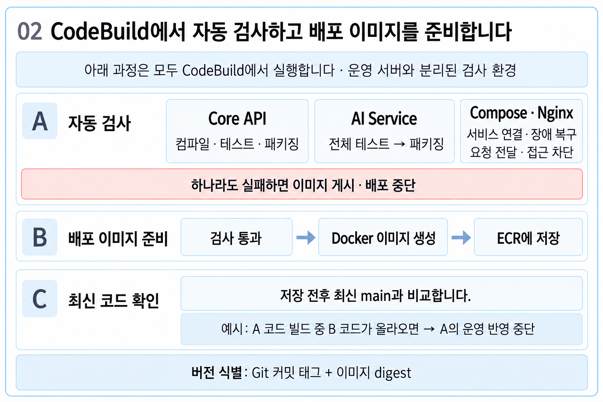
- 검증: Core clean build·테스트, AI 전체 테스트·패키지 빌드, Compose·Nginx 통합 검증을 통과해야 배포합니다.
- 버전: 커밋 태그·이미지 digest로 버전을 식별하고, ECR 게시 전후 최신
main을 확인해 오래된 빌드의 운영 반영을 막습니다. - 검증 스크립트: verify-backend.sh에 Core·AI 테스트, 검색 평가 도구 검사, Compose·Nginx 통합 검증의 실행 순서를 작성했습니다. AI 테스트에는 임시 Qdrant를 실행하고 검증 후 정리합니다.
- CodeBuild 실행 설정: backend.yml에서 검증 스크립트 실행 후 release.py를 호출하도록 설정했습니다. 검증이 실패하면 빌드를 중단해 이미지 게시와 배포 요청으로 넘어가지 않습니다.
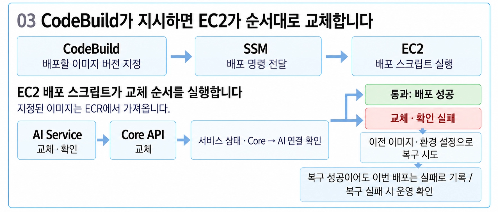
- CodeBuild가 작성한
release.py를 실행해 SSM으로 EC2에 배포를 요청합니다. EC2에서는 직접 작성한 배포 스크립트가 서비스 교체·상태 확인·실패 복구를 수행합니다. - 교체: 배포 잠금·사전 점검 후 AI Service → Core API 순서로 교체하고, 서비스 상태와 Core → AI 연결을 확인합니다.
- 복구: 교체·확인에 실패하면 이전 이미지·환경 설정으로 복구를 시도합니다. 복구에 성공해도 이번 배포는 실패로 기록합니다.
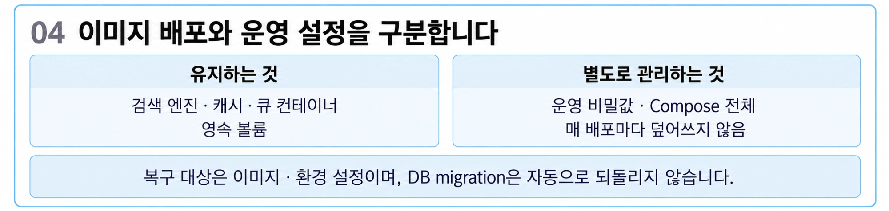
- 검색 엔진·캐시·큐 컨테이너와 영속 볼륨은 유지하고, 운영 비밀값·Compose 전체는 이미지 배포와 별도로 관리합니다. DB migration은 자동으로 되돌리지 않습니다.
구현 근거: 배포 전 검증 · 이미지 게시·SSM 호출 · 교체·복구 구현
3.8. 프라이빗 네트워크와 API 라우팅 구성
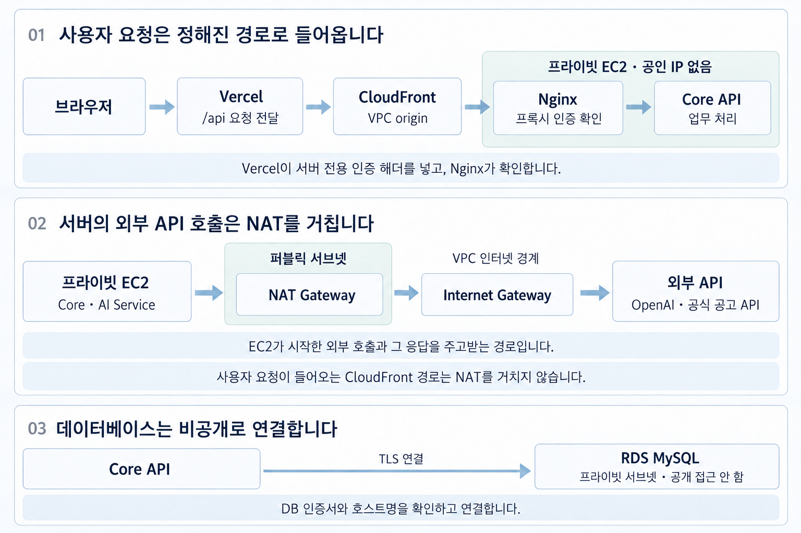
- EC2와 DB를 인터넷에 직접 공개하지 않으면서, 사용자 요청을 받고 OpenAI·공식 공고 API를 호출할 수 있어야 했습니다.
- EC2와 RDS MySQL은 프라이빗 서브넷에 배치했습니다. 사용자 요청은 Vercel·CloudFront를 통해 받고, 서버의 외부 API 호출은 NAT Gateway를 거치도록 경로를 나눴습니다.
| 구분 | 통신 경로 | 설계 의도 |
|---|---|---|
| 사용자 API 요청 | 브라우저 → Vercel /api → CloudFront VPC origin → Nginx → Core API | 브라우저는 화면과 같은 사이트의 /api로 요청하고, Vercel·CloudFront가 이를 공인 IP가 없는 비공개 EC2에 전달합니다. |
| 서버 외부 호출 | 프라이빗 EC2 → NAT Gateway → Internet Gateway → OpenAI·공고 API | 프라이빗 서버의 외부 API 통신 경로 확보 |
| 데이터베이스 연결 | Core API → 비공개 RDS MySQL | DB 비공개 배치 및 인증서·호스트명을 검증하는 TLS 연결 |
- 요청 확인: Vercel이 서버 전용 인증 헤더를 넣고, Nginx가 확인합니다.
- 정보 전달: Nginx는 인증 헤더를 제거하고, 신뢰한 사용자 IP를 Core API에 전달합니다.
- 캐시: 사용자별 API 응답은 캐시하지 않습니다.
- 운영 관리: SSM으로 EC2에 운영 명령을 실행합니다.
구현 근거: 배포 구성 기록 · Vercel 프록시 · Nginx 라우팅 · 운영 Compose·RDS TLS
4. 트러블슈팅
4.1. 한국어 검색에서 누락되던 공고 개선
4.1.1. 문제
공고 1,422건 중 300건을 고른 뒤, AI가 각 공고를 읽고 검색 질문을 하나씩 만들었습니다. 질문을 만들 때 선택한 공고를 ‘목표 공고’로 미리 기록하고, 전체 1,422건을 검색했을 때 그 공고가 상위 20개 안에 나오는지 확인했습니다.
처음에는 질문 300개 중 5개에서 목표 공고가 상위 20개 안에 나오지 않았습니다. 아래 횡성군 공고도 그중 하나였습니다.
| 구분 | 실제 평가 예시 |
|---|---|
| 미리 선택한 공고 | [강원] 횡성군 2026년 중소기업육성자금 이차보전 지원 공고 |
| 질문의 근거가 된 공고 내용 | 관내 중소기업 및 소상공인 / 대출이자 최대 4% 지원 |
| 공고를 읽고 만든 질문 | “횡성 소상공인의 대출이자를 지원하는 공고 찾아줘” |
| 확인한 것 | 검색 결과 상위 20개에 위 횡성군 공고가 포함되는가? |
| 설정 변경 전 → 후 | 상위 20개 밖 → 1위 |
다른 관련 공고가 나왔더라도 미리 지정한 공고가 없으면, 이 평가에서는 목표 공고를 찾지 못한 것으로 셌습니다. 실제 사용자가 남긴 질문을 모은 평가와는 구분합니다.
4.1.2. 원인 분석
Elasticsearch가 질문과 공고의 단어를 어떻게 나누는지 확인했습니다. 횡성이 횡으로 분석되고, 소상공인은 문맥에 따라 다르게 분해되는 문제가 있었습니다. 여행사와 여행업체처럼 뜻이 비슷해도 표현이 달라 놓치는 경우도 확인했습니다.
4.1.3. 해결
- 복합어 처리: Nori 분해 모드를
mixed에서discard로 바꿔, 원형과 분해된 단어를 함께 사용하던 방식에서 분해된 단어를 사용하는 방식으로 조정했습니다. - 사용자 사전:
횡성,소상공인같은 지명·용어가 검색에 필요한 형태로 분석되도록 등록했습니다. - 유사 표현: 검색 시
여행사 ↔ 여행업체를 함께 찾도록 설정했습니다. 신청 범위가 달라지는융자 = 보조금같은 동의어는 추가하지 않았습니다.
4.1.4. 결과와 한계
검증 결과: 같은 공고 1,422건과 질문 300개로 비교한 결과, 목표 공고가 상위 20개에 포함된 질문이 295개에서 299개로 증가했습니다. 기존 누락 5개 중 4개를 회복했으며, 기존에 찾았던 목표 공고가 상위 20개 밖으로 밀려난 경우는 없었습니다.
개선 사례: “횡성 소상공인 대출이자” 질문의 목표 공고는 상위 20개 밖에서 1위로 올라왔습니다. 다만 순위가 하락한 질문 9개와 여전히 찾지 못한 질문 1개도 함께 기록했습니다.
해석 범위: 개발에 사용한 AI 작성 질문으로 평가했으며, 실제 사용자 질문에 대한 일반적인 성능을 입증한 결과는 아닙니다. 여러 설정을 함께 변경했으므로 특정 설정 하나의 효과로 단정하지 않았습니다. 이 결과는 Elasticsearch 키워드 후보 검색의 개선이며, 최종 하이브리드 추천이나 RAG 답변 정확도와는 구분합니다.
평가 근거: 한국어 검색 설정 변경 전후 비교 보고서
4.2. 근거 구간 ID 오류
4.2.1. 문제
공고 원문을 근거로 답변을 생성할 때, LLM이 인용한 구간의 64자리 ID에서 마지막 글자 하나를 빠뜨려 63자리로 반환한 사례가 있었습니다. 이 값은 실제 근거 구간의 ID와 일치하지 않아 응답 검증에 실패했습니다.
4.2.2. 원인 분석
기존 방식은 LLM이 답변 내용뿐 아니라 긴 인용 ID까지 직접 복사해 반환하도록 했습니다. 답변에 사용한 근거를 선택하는 일과 정확한 식별자를 전달하는 일을 모두 모델에 맡겨, ID를 한 글자만 잘못 옮겨도 검증을 통과할 수 없었습니다.
4.2.3. 해결
LLM에는 긴 ID 대신 근거 목록의 구간 번호를 제공하고, 답변에 사용한 번호를 선택하도록 변경했습니다. AI Service는 반환된 번호의 범위와 중복을 확인한 뒤, 요청에 포함된 근거 목록에서 해당 구간의 실제 ID를 찾아 복원합니다.
LLM과 코드의 역할: LLM은 답변과 인용할 구간을 선택하고, ID 복원은 SupportProgramEvidenceAnswerAgent의 일반 Python 코드가 처리합니다. 예를 들어 0번을 선택하면 request.chunks[0].id를 읽습니다. 이 번호는 이번 요청에 전달된 목록의 위치입니다.
이해를 위한 예시
AI에게 전달한 근거
0번: 온라인으로 신청합니다.
1번: 마감일은 10월 31일입니다.
AI가 반환
답변: 온라인으로 신청할 수 있습니다.
사용한 구간 번호: 0
AI Service 코드가 처리
0번 구간의 실제 64자리 ID를 찾아 Core에 전달Core에는 기존과 같이 citationChunkIds로 실제 구간 ID를 전달하므로 서비스 간 응답 형식은 유지했습니다.
4.2.4. 결과와 한계
검증 결과: 수정 후 가상 질문 4건에서 기대 응답 상태와 인용이 일치했습니다. 공식 공고 2건의 질문 6건도 전체 요청이 성공하고 기대 응답 상태가 일치했습니다. 긴 ID를 모델이 직접 옮겨 적는 과정은 제거했습니다.
해석 범위: 공식 질문의 의미 검토는 AI만 수행했으며, 6건 중 5건은 일치하고 1건은 일부 조건을 빠뜨려 부분 일치했습니다. 공식 공고는 각각 청크 1개여서 여러 청크 사이의 검색 품질은 측정하지 않았습니다. 이 소규모 결과만으로 모든 인용이나 답변의 정확성을 보장할 수는 없습니다.
평가 근거: 근거 구간 ID 오류와 수정 후 검증 기록
5. 기술 보고서 PDF
맞춤 검색·RAG·AI 에이전트·서비스 구조·배포를 구조도 중심으로 정리한 29페이지 기술 보고서입니다.